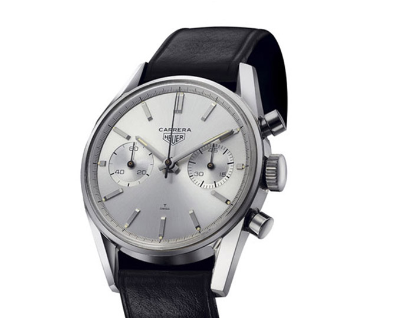
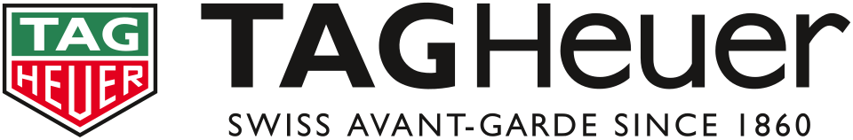

홈 > 브랜드 매거진 > 태그호이어
태그호이어
태그호이어(TAG Heuer)는 1860년 에두아르 호이어가 설립한 스위스 고급 시계 제조사이다.
산업 분야 패션·럭셔리 · 공개 등급 자료 기반 · 브랜드 평가 4.3 ★

한눈에 보는 브랜드
태그호이어(TAG Heuer)는 에두아르 호이어가 스위스 생티미에에서 회중시계 제작으로 시작해 1882년 크로노그래프, 1887년 오실레이팅 피니언을 특허받았다. 1985년 TAG 지분 인수로 현 이름이 됐고 1999년 LVMH가 인수했으며 카레라·모나코로 유명하다.
브랜드 관점
태그호이어 항목은 단순한 이름 목록이 아니라 패션·럭셔리 시장 안에서 어떤 역할을 하는지 읽기 위한 기준점입니다. 제품·서비스 범위, 유통 방식, 시각 아이덴티티, 시장 포지션을 함께 비교하면 같은 산업의 다른 브랜드와 차이가 선명해집니다.
시작과 성장
에두아르 호이어가 1860년 스위스에서 설립한 시계사로, 현재 LVMH 소속이다.
브랜드 아이덴티티
모터스포츠·크로노그래프 전통을 잇는 스위스 럭셔리 스포츠 워치 브랜드이다.
제품과 서비스
태그호이어의 제품과 서비스는 패션·럭셔리 범주에서 해석됩니다. 이 섹션은 상품군, 서비스 방식, 판매 채널, 사용 장면을 분리해 추적하기 위한 기본 설명이며, 추가 자료가 확보되면 대표 제품과 가격대, 시장별 차이까지 확장할 수 있습니다.
현재 상태
타임라인
BI/CI 변천사

대표 로고대표 브랜드 마크함께 읽을 브랜드
 패션·럭셔리 · 편집 검수구찌
패션·럭셔리 · 편집 검수구찌구찌는 이탈리아의 패션·럭셔리 브랜드로, 소재, 실루엣, 로고, 컬렉션 운영이 취향과 지위 신호를 만드는 영역입니다.
디스
디스이즈네버댓
패션·럭셔리 · 디렉토리디스이즈네버댓디스이즈네버댓는 패션·럭셔리 브랜드로, 소재, 실루엣, 로고, 컬렉션 운영이 취향과 지위 신호를 만드는 영역입니다.
떠그
떠그클럽
패션·럭셔리 · 디렉토리떠그클럽떠그클럽는 패션·럭셔리 브랜드로, 소재, 실루엣, 로고, 컬렉션 운영이 취향과 지위 신호를 만드는 영역입니다.
렉토
렉토
패션·럭셔리 · 디렉토리렉토렉토는 패션·럭셔리 브랜드로, 소재, 실루엣, 로고, 컬렉션 운영이 취향과 지위 신호를 만드는 영역입니다.
마뗑
마뗑킴
패션·럭셔리 · 디렉토리마뗑킴마뗑킴는 패션·럭셔리 브랜드로, 소재, 실루엣, 로고, 컬렉션 운영이 취향과 지위 신호를 만드는 영역입니다.
마르
마르디 메크르디
패션·럭셔리 · 디렉토리마르디 메크르디마르디 메크르디는 패션·럭셔리 브랜드로, 소재, 실루엣, 로고, 컬렉션 운영이 취향과 지위 신호를 만드는 영역입니다.
 패션·럭셔리 · 디렉토리마리떼 프랑소와 저버
패션·럭셔리 · 디렉토리마리떼 프랑소와 저버마리떼 프랑소와 저버는 패션·럭셔리 브랜드로, 소재, 실루엣, 로고, 컬렉션 운영이 취향과 지위 신호를 만드는 영역입니다.
스탠
스탠드오일
패션·럭셔리 · 디렉토리스탠드오일스탠드오일는 패션·럭셔리 브랜드로, 소재, 실루엣, 로고, 컬렉션 운영이 취향과 지위 신호를 만드는 영역입니다.